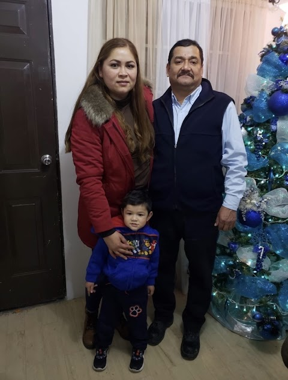
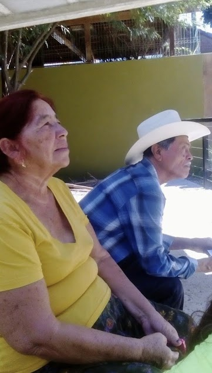
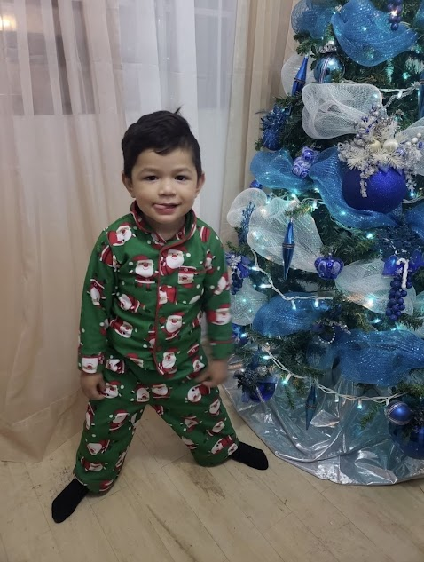

Mi Familia!
Esta es la historia de mi familia. Mi hogar esta formado por cuatro integrantes, bueno, en realidad somos 5 integrantes por temporadas
tiempo atras eramos 6 integrantes tambien temporalmente, digo temporalmente porque mis abuelitos por parte de mi mamá venian a mi casa por un tiempo
de vacaciones y despues se regresaban a su hogar que se encuentra en el estado de Nayarit, dejamos de ser 6 integrantes aproximadamente hace casi 5 años,
mi abuelito fallecio. A partir de ese momento mi hogar se conforma por 5 integrantes incluyendo a mi abuelita, mi hermanito, mis padres y yo; recalcando
que cada uno de nostros llevamos a mi abuelito en nuestros corazones.

MIS PADRES.Mis papas son nacidos en el estado de Nayarit, mi mama Nayeli hoy en dia tiene 37 años
ella nacio el dia 24 de junio del año 1986, mi papa Benito hoy en dia tiene 49 años el nacio el dia
21 de marzo del año 1974, el desde pequeño a trabajado, antes trabajaba de ganadero en el estado de
Nayarit cuidando vacas, becerros, caballos, borregos, cerditos, y muchos mas...
a mi me gusta mucho que me platique sus experiencias en el rancho y aun mas ir a cuidar a los animalitos.

MIS ABUELITOS.Mis abuelitos al igual que mis papas son nacidos en el estado de Nayarit, los papas de mi
mama son mas cercanos a mi familia mi abuelita materna se llama Micaela Burgara y mi abuelito materno se llamaba
(digo se llamaba porque tristemente fallecio) Salvador Castellon ellos estuvieron conmigon desde muy pequeña, mi abuelito
Salvador fue el que me enseño a caminar, a diferencia de mis abuelitos paternos casi no tengo contacto con ellos
mi abuelita paterna se llama Maria de Jesus Garcia y mi abuelito paterno se llama Felipe Solis.

MI HERMANITO.Mi hermanito, ayyy que podre decir de el, es uno de mis mayores motivos a seguir adelante
el es el motivo de muchas sonrisas mias, el se llama Tadeo Solis el nacio aqui en Tijuana B.C el dia 24 de marzo del
del año 2019 hoy en dia solo tiene 4 añitos el nacio despues de 12 años que yo, por un mometo llegue a pensar que el resto
de mi vida seguiria siendo hija unica (la favorita). Actualmente el va en preescolar en el cual es muy inteligente
con decir que ya aprendio a escribir su nombre y se aprendio los numeros y colores, ESTOY MUY ORGULLOSA DE EL!
Caracteristicas de mi familia:
- Me apoyan incondicionalmente.
- Me hacen muy muy feliz.
- Nunca me dejan sola.
- Me cuidan siempre.
- Me corrigen cuando yo estoy mal.
| Hora |
Alimento |
Bañar |
| 7:00-8:00 |
Desayuno |
1 vez al dia |
| 15:00-16:00 |
Comida |
1 vez al dia |
| 19:00-20:00 |
Cena |
1 vez al dia |

Alumn@: Solis Castellon Ingrid Daneyra Fecha:21/02/2024
Grupo:4BPM Materia: Desarrollo de Aplicaciones Web